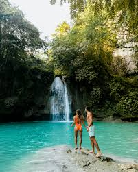

Chocolate Hills (Bohol)
The Chocolate Hills are a geological formation in Bohol characterized by over 1,000 cone-shaped hills. During the dry season, the hills turn brown, resembling chocolate kisses.
Kawasan Falls (Cebu)
Located in Badian, Cebu, Kawasan Falls is a three-tiered waterfall known for its crystal-clear turquoise waters. Visitors can swim, go bamboo rafting, or canyoneering in the area.
Panglao Island (Bohol)
Panglao Island is known for its beautiful beaches, including Alona Beach, which offers white sand and clear waters. It's a popular destination for diving and snorkeling.
Siquijor Island (Siquijor)

Siquijor Island is known for its mystical charm, pristine beaches, and natural attractions. Visitors can explore waterfalls, dive in coral reefs, and experience traditional healing practices.
Cebu City (Cebu)
Cebu City offers a mix of historical and modern attractions. Visit the Magellan's Cross, Basilica Minore del Santo Niño, and Fort San Pedro. Explore the bustling city and enjoy the vibrant food scene.
Oslob Whale Sharks (Cebu)

In Oslob, Cebu, visitors can have a unique opportunity to swim with whale sharks. These gentle giants can be observed up close in their natural habitat.
Tumalog Falls (Cebu)
Tumalog Falls is a stunning waterfall in Oslob, Cebu. Its curtain-like cascades create a magical atmosphere, and visitors can swim in its cool turquoise waters.